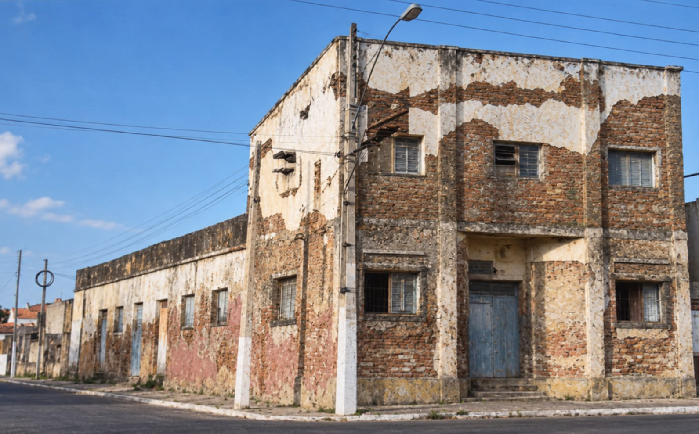

Antes de existir o Porto de Ama, existiu uma luta para impedir que a memória de Macau fosse demolida.
O Porto de Ama Centro de Cultura tem sua história ligada ao Centro Social Pio XI, uma instituição histórica, sem fins lucrativos, de assistência social, educacional e comunitária fundada em 21 de março de 1950, por padre Luiz Galdino, pároco de Macau, e por Dom Avelar Brandão Vilela, então bispo diocesano, cuja trajetória preserva memórias muito ligadas ao desenvolvimento educacional e comunitário da sociedade macauense.
Com a finalidade histórica de prestar assistência social a crianças e adolescentes em situação de vulnerabilidade e profissionalizar jovens e adultos, o Centro Social Pio XI nasceu antes da rádio-escola, mas serviu de embrião para o Ginásio Nossa Senhora da Conceição, atualmente CEIMH, fundado em 1956, tendo sido durante muito tempo entidade mantenedora dessa escola, peça-chave na democratização do ensino secundário no município de Macau, ao mesmo tempo em que a Igreja supria a ausência do Estado na educação do interior do RN.
Da década de 50 ao ano 2000, essa instituição histórica de relevância cultural em Macau foi sendo corroída pelo salitre e pela dificuldade de encontrar alternativas para funcionar em segurança. Nessa época, o então pároco de Macau, padre Edilson Soares Nobre, foi comunicado pelo poder público local que, por questão de segurança, o prédio seria demolido.
Teve início então um movimento articulado por representantes de diversos segmentos da sociedade, liderado pelo padre Edilson Nobre, para pensar alternativas de salvar o prédio e a memória do que ele representava como legado cultural e histórico da comunidade macauense. A proposta de envolver a comunidade local através de uma pesquisa foi um passo muito significativo, porque fortaleceu o sentimento de identidade e de pertencimento.